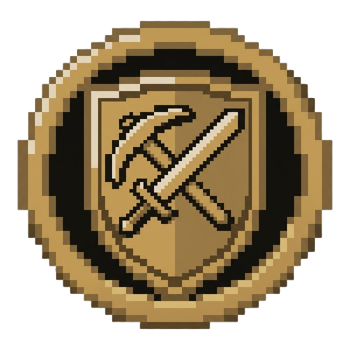

Squire
Paid in coin or in kind.
A loyal NPC companion for Minecraft NeoForge 1.21.1 — built on the MineColonies AI primitives. Walks, fights, mines, chops, farms, fishes, patrols, levels up, and carries gear. No teleporting. No cheating. A professional henchman, not a pet.
The Bond
Craft a Squire's Crest, hold it, right-click. Your squire materializes, wreathed in soul-fire.
The Trades
Mine, chop, farm, fish, or patrol — select an area with the Crest, the squire works until the area is done or you recall.
The Blade
MineColonies ThreatTable-driven combat. Damage-weighted targeting, auto-equipped weapons and armor, citizen-safe.
The Ledger
Keep-best deposit, auto-restock from remembered chests, 5-tier XP progression, expanding backpack.